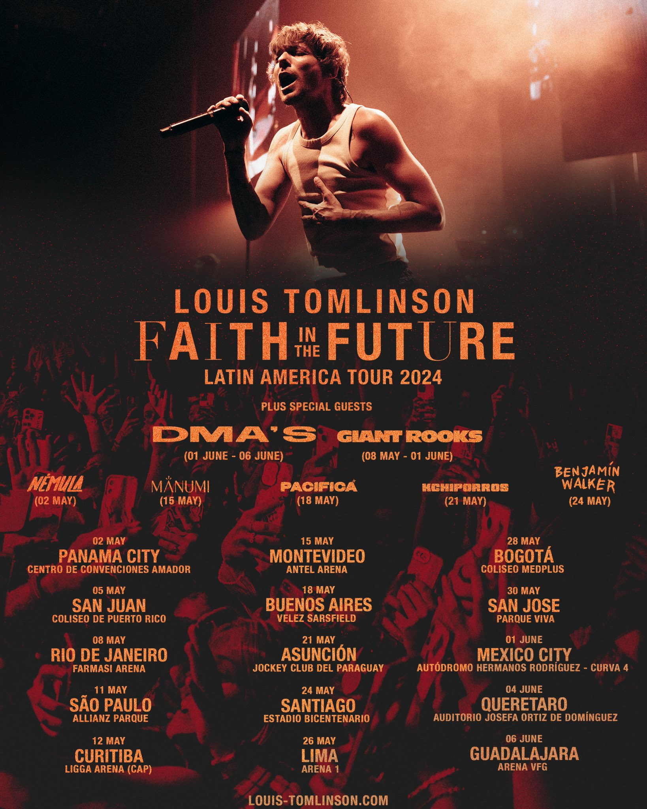

FAITH IN THE FUTURE
FAITH IN THE FUTURE es el segundo álbum de estudio de Tomlinson, lanzado el 11 de noviembre de 2022 por BMG. Se logró un importante hito, cuando el álbum debutó en el número uno en el Reino Unido; el intérprete alcanzó la cima de las listas de éxitos en el país como solista.

SETLIST
- THE GREATEST
- KILL MY MIND
- BIGGER THAN ME
- LUCKY AGAIN
- HOLDING TO A HEARTACHE
- HEADLINE
- FACE THE MUSIC
- WE MADE IT
- DRAG ME DOWN (ONE DIRECTION)
- NIGHT CHANGES (ONE DIRECTION)
- THAT'S THE WAY LOVE GOES
- CHICAGO
- COMMON PEOPLE
- HIGH IN CALIFORNIA
- WRITTEN ALL OVER YOUR FACE
- ALL THIS TIME
- SHE IS BEAUTY WE ARE WORLD CLASS
- WALLS
- 505 (ARCTIC MONKEYS)
- BACK TO YOU
- 7 (CATFISH AND THE BOTTLEMEN)
- ANGELS FLY
- OUT OF MY SYSTEM
- SATURDAYS
- WHERE DO BROKEN HEARTS GO (ONE DIRECTION)
- SILVER TONGUES
Para promocionar FAITH IN THE FUTURE, Tomlinson lanzó FAITH IN THE FUTURE WORLD TOUR en mayo de 2023, tras un ocupado período con la gira de su álbum debut, WALLS, tocando ante más de 500 mil fanáticos en más de 80 shows en todo el mundo, incluido México. Esto consolidó su posición como uno de los artistas británicos de mayor éxito internacional.